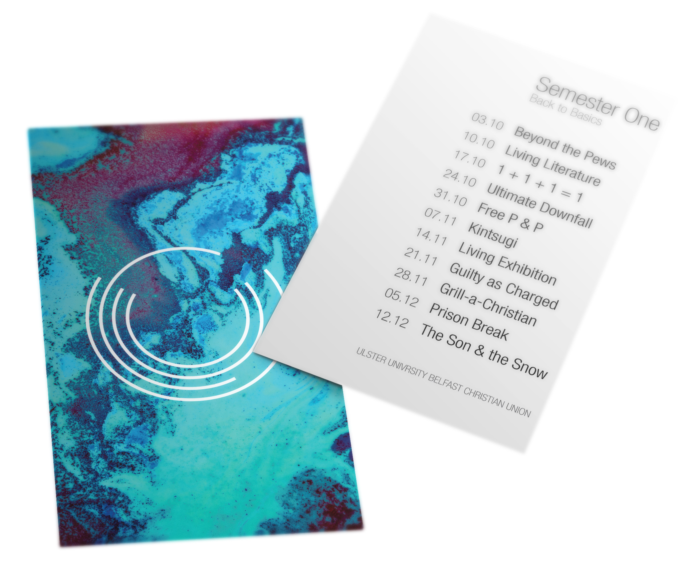
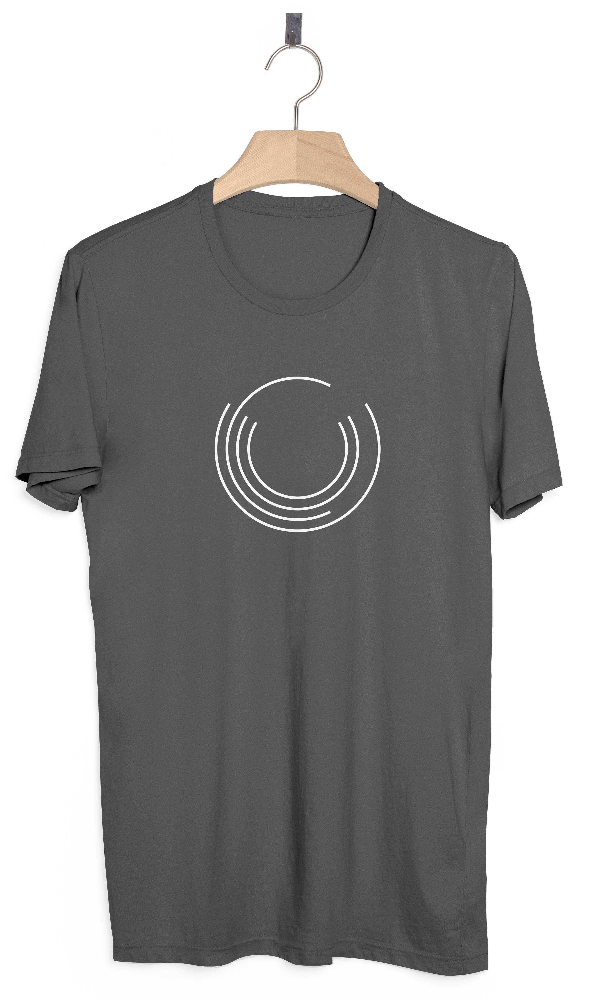

| Overview: The identity of the Ulster University Belfast Christian Union has not been up to standard for an art college and it was ready for a fresh new look and style |
Created: Jun 2017
Skill: Branding |
Role: Designer |
| This was the original logo for the Ulster University Belfast Chrisitan Union (UUBCU). For being a design student in an art college, I couldn’t bear this design. Over the course of half a year, the look was going to change vastly. This project shows the process that took place and the final outcome of a successful rebrand! |
|
This was the inital design for the logo including a visual
marque and a wordmark. The visual marque changed between a crown
(seen above) and a set of three interlocking circles, representing
the trinity. This logo just didn’t feel quite right or look slick
enough for the image we wanted to project.
The circles actually represent the initals of the society, UUCU, which stands for Ulster University Chrsitian Union. By not including the location, it allows for the logo to be implemented in other campuses. |
|
This was the second attempt at the logo, once again having the
wordmark incorporated into the design. This was an adaption of the
first logo making use of the circles. The circles idea came from
the original logo as well as the idea that it can be self-sustaining
when placed within any other design work or shown on it’s own.
When testing the design, I tried this logo out in different styles and backgrounds to show the versatility. The paint streak was added as a gesture towards being part of the Belfast School of Art and Design. |
|
This was the final logo design chosen. The logo was a refinement of
the first design. It makes the lines thinner and takes out all of the
unneccessary words and extra features such as the visual marque in
the centre and the line underneath. I am very happy with the way this
logo has turned out. It fits in with the look for the CU
The circles in this arrangement are a visual representation of the acronym ‘UUCU’ which stands for Ulster University Christian Union. This was the reasoning for putting the circles in this form. This design pulls some inspiration from the works of Josef Muller-Brockman’s visual of circles seen in much of his work |
|
With the logo finalised, I looked more into the workdmark and how it
would link with the visual marque. I first chose the font that would
be used, this was Helvetica Neue LT Std 37 Thin Condensed.
The positioning and wording was next. I had tried simply putting ‘Belfast’ inder the logo, as the logo encapsulated the societies identity of UUCU, but when the brand would launch, people would not know that the logo was a representation of these words, hence why I opted to include the letters 'UUBCU’. The wordmark also fitted best underneath the visual marque as opposed to inside as this limited the size it could be. The idea is that over time, the wordmark can be dropped to just leave the circles logo and people will automatically associate that with the CU. |
|
With the design for the logo finally complete it was now time to work
on refining the colours that could be used in the logo. We went through
many different variations looking at changing all the lines, select
lines, and the background.
After working through all five of the colours seen in the first picture, it was narrowed down to the yellow and blue. The decision was also made to just change the ‘C’ in the logo and this allows the logo to be dynamic if another campus from Ulster University would liked to make use of the logo too. Ultimately, I went with the blue as it was versatile and would work on both light and dark backgrounds, it also adds a bit of flair into the logo to help it to stand out. I also played around with the use of colour on a wordmark. |
Final Outcome
|  | ||
|  |